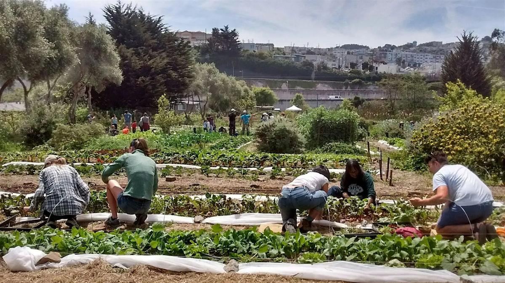
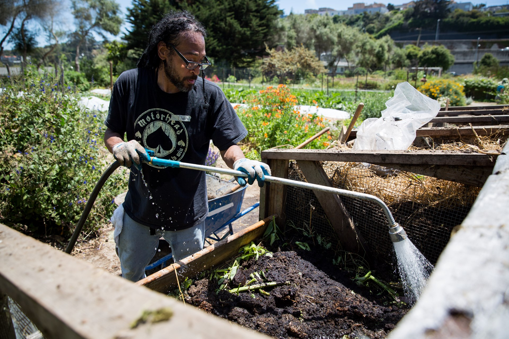

Mon + Sat
Community workdays are held Monday and Saturday afternoons from 1 to 5 pm.
Alemany Farm welcomes individual volunteers, corporate groups, and service groups. Visitors are asked to register in advance.

Community workdays are held Monday and Saturday afternoons from 1 to 5 pm.
Native plant volunteer days take place on the first Monday and third Saturday of each month.
Corporate teams and service groups can contact the farm to schedule visits and volunteer experiences.

New volunteers are encouraged to join an orientation tour at the start of the workday. Projects may include weeding, planting, bed preparation, fruit tree work, compost making, mulching, greenhouse work, and harvest.
Visitors are encouraged to bring a water bottle, hat, sturdy shoes, layers, sunscreen, snacks, and a bag to carry produce home.
The farm is at 700 Alemany Boulevard in San Francisco. Glen Park is the closest BART station, and bus routes 14 and 49 also serve the area.